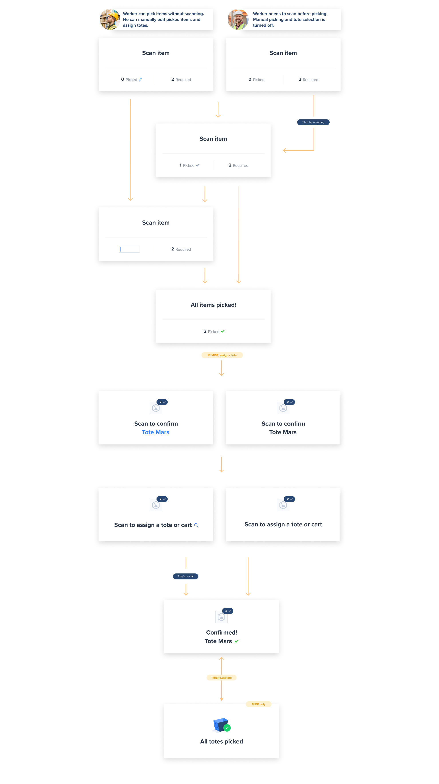
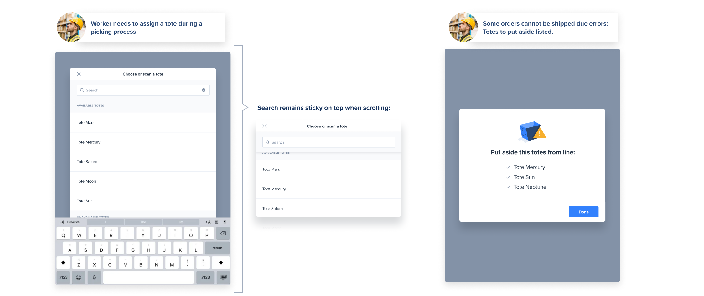
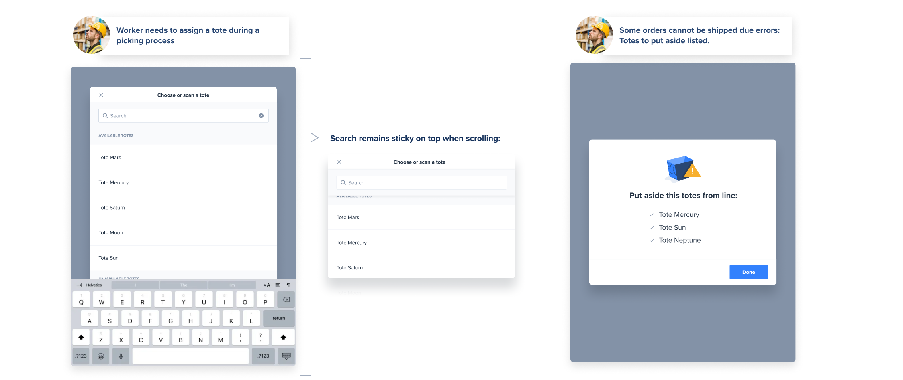

Shiphero:Enhancing Efficiency in Warehouse Operations
NYC 2020
The Goal
Our aim was to rebuild the picking flows and related workflows to make daily tasks more accessible and consistent. Previously, elements varied too much across different pages and flows, making the process messy and difficult to navigate. By streamlining these workflows, we aimed to improve the learning curve and efficiency, ensuring that users could quickly adapt to various flows.
Additionally, several critical needs had to be addressed:
- Scanner Flexibility: The scanner was always mandatory, which created issues. We needed to allow exceptions where necessary. While scanning should remain the primary path, administrators must be able to set special permissions.
- Minimizing Workflow Blockages: Orders that couldn’t be completed should not halt the entire process. If an order needs to be set aside, it shouldn’t delay other orders.
- Error Management: User processes should not be blocked by errors such as empty locations, or missing or broken items.
Team & Process
- Lead Designer: Stefania
- Manager: Project Manager
- Collaborators: I worked closely with a Product Designer within our squad, maintaining alignment throughout the process on our projects. Additionally, the development team, also part of our squad, provided crucial technical feedback to ensure feasibility. We shared collaboration instances to address challenges and refine our approach.
Page Structure Refactor:
Through extensive research on existing picking flows, we identified three fundamental page structures:
- A page where the user selects the number of totes or orders to pick.
- A page where users can preview orders.
- A page where users can preview items.
These pages were redesigned to allow for easy customization, making them adaptable for use in any picking flow or other application scenarios.
Basic Page Structures for Flows Picking Flows: Pages and Instances
Item's Cards States & Behavior:
The item cards were tailored to accommodate various flows and provide the necessary information at each stage of the process. In the following image, you can see the different states of the card as the user progresses through the flow:


Picking Page Topology:
The picking page includes a card that guides users through their next steps, whether it's selecting a specific number of items or assigning a tote (containers used to organize orders).
At the top, users will find details about the item to be picked, including its location and the expected quantity.
Additionally, users will find other available actions, such as reporting errors if needed. Each action also offers a manual option for situations where a functional scanner is unavailable.

Picking Page Card States
This is how the state of the card changes through the flow:
Picking Page Examples
These are a few examples of possible states of the page and card


Some other pages
The initial image depicts the error reporting page, where users encounter a preview of the item along with a list of error types. After selecting the error type, users are prompted to complete a form with necessary information for submission to the manager. Additionally, the system implements adjustments to prevent future errors, such as temporarily reducing the item quantity to prevent wasted time for other workers.
The second image illustrates situations where totes need to be set aside due to errors, such as lack of stock of an item preventing order completion.
In the third image, a modal window is displayed for manual tote assignment, along with a page where users can view all pending orders for picking and have the option to delete individual ones.
 
